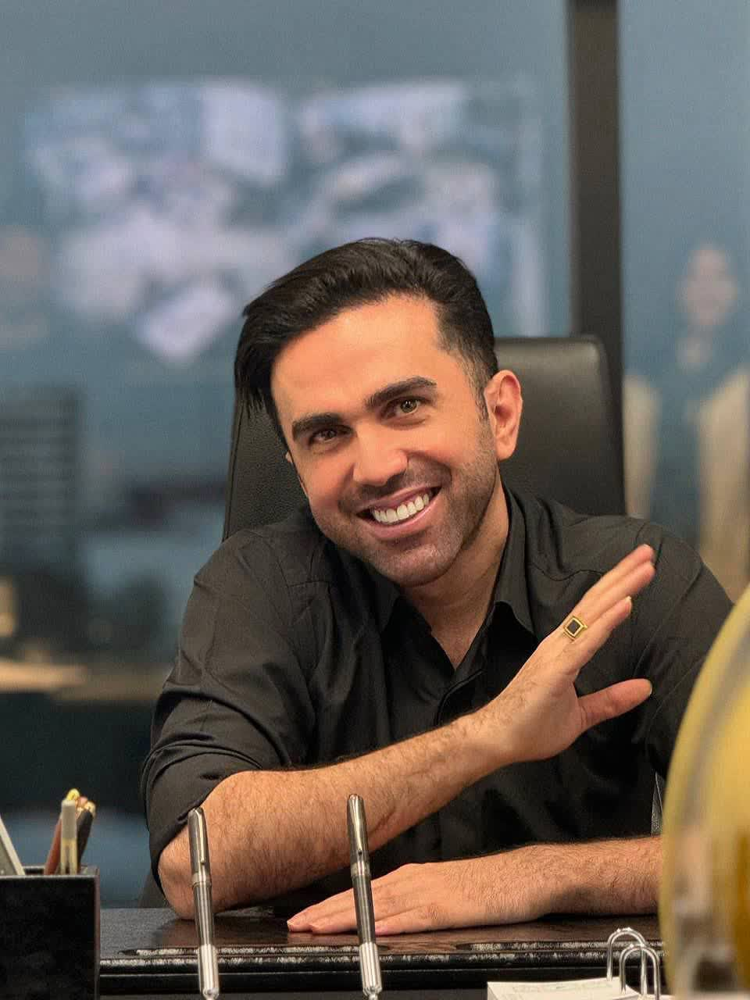
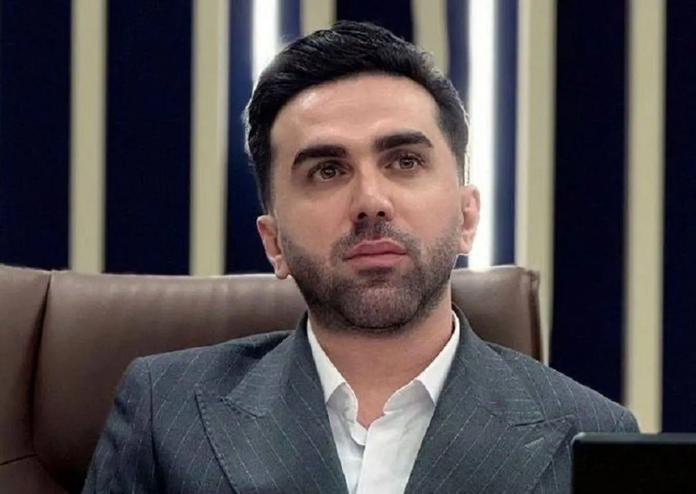

شهید دکتر
مجید تجنجاری
نخبه، مخترع، پژوهشگر و استادی که دانش را به نسل بعد منتقل کرد.
یک زندگی در مسیر علم و فناوری
آغاز یک مسیر متفاوت
شهید دکتر مجید تجنجاری در سال ۱۳۶۹ در روستای تجنجار شهرستان آمل متولد شد. از نوجوانی به رباتیک، الکترونیک، اختراع و فناوری علاقه داشت و بعدها به یکی از چهرههای شناختهشده حوزه هوش مصنوعی، برنامهنویسی و سیستمهای خبره تبدیل شد.
از برق تا کامپیوتر
مهندسی برق ـ الکترونیک و سپس مهندسی کامپیوتر ـ نرمافزار؛ با پروژههایی در شبکههای عصبی، تشخیص اثر انگشت و ربات انساننما.
DBA دانشگاه تهران
در سالهای ۱۳۹۹ تا ۱۴۰۱ نیز در دانشگاه تهران تحصیل کرد و دانش فنی را با مدیریت و کسبوکار پیوند داد.
از ایده تا اختراع
شبکههای عصبی
در پروژه کارشناسی، از الگوریتمهای شبکه عصبی برای شناسایی اثر انگشت استفاده کرد.
ربات انساننمای ایرانی
در دوره مهندسی کامپیوتر روی ساخت رباتی انساننما با قابلیت گفتوگو به زبان فارسی و انگلیسی کار کرد.
فناوریهای هوشمند
در حوزههایی مانند پردازش تصویر، رباتهای هوشمند، اتوماسیون و سیستمهای هوش مصنوعی فعالیت و اختراع داشت.
مجید جان را از قابها ببین


دو عکس اول، فایلهای ارسالی تو هستند و داخل پروژه ذخیره شدهاند؛ تصویر سوم از منبع عمومی وب بارگذاری میشود.
افتخارات، اختراعات و دستاوردها
پتنت و افتخارات بینالمللی
ثبت پتنت جهانی در روسیه، مدال نقره ارشمیدس مسکو و دیپلم افتخار از کرواسی و صربستان.
مدالهای جهانی اختراعات
کسب مدال نقره و برنز در نمایشگاهها و مسابقات جهانی اختراعات.
مدال نقره جهانی
کسب مدال نقره در مسابقات جهانی اختراعات.
طلا در جهان
مدال طلای مسابقات جهانی اختراعات و یک مدال نقره دیگر در همان سال.
مقام اول جهان
کسب مقام اول مسابقات جهانی اختراعات در نورنبرگ آلمان.
طلای آسیا
مدال طلای مسابقات آسیایی اختراعات در گوانگجو چین.
رباتیک و فناوری پیشرفته
گزارشها از کسب مدال طلای جهانی اختراعات در رباتیک و فناوریهای پیشرفته در آلمان و جایزه ویژه همکاریهای اتحادیه اروپا خبر میدهند.
المپیاد رباتیک ایران
مدال طلای المپیاد رباتیک ایران و دعوت به اردوی جهانی لندن.
فهرست بر اساس سوابق منتشرشده در خبرگزاری تسنیم و پروفایل عمومی منتسب به ایشان تنظیم شده است.
ایدههایی که تبدیل به محصول شدند
خودروی دارای حرکت طولی و عرضی هنگام پارک دوبل
سیستم هوشمند ثبت زمان بهصورت بیسیم
دستگاه هوشمند فشار خون و ضربان قلب با ارسال موقعیت
«دروازه شهر هوشمند» با هدف پیادهسازی در سطح کشور
سیستم پیشرفته امتیازدهی تکواندو
سامانه اسکن کانتینر بار با استفاده از واکنشپذیری الکترومغناطیسی
سامانه بیسیم پومسه با قابلیتهای تحلیلی برای داوری تکواندو
پردازش تصویر، رباتیک، مکاترونیک، بیومکاترونیک و اتوماسیون
استاد فقط برای خودش نمیساخت
آموزش
سالها در زمینه برنامهنویسی، هوش مصنوعی، علوم داده و فناوریهای نوین تدریس کرد.
آیولرن
از بنیانگذاران و مدرسین اصلی آکادمی آیولرن بود؛ مجموعهای که با هدف تربیت متخصصان برنامهنویسی و هوش مصنوعی شکل گرفت.
کاربردیسازی علم
فعالیتهای او فقط نظری نبود؛ در پردازش تصویر، تشخیص چهره، اسکن کانتینر، کنترل کیفیت و محصولات فناورانه به کاربرد علم توجه داشت.
پرورش نسل بعد
بخش مهمی از میراث او، شاگردان و جوانانی هستند که از آموزشهایش برای ساختن مسیر خود استفاده کردند.
مجید جان،
قلبِ منی.
برای خیلیها شاید نام او فقط نام یک نخبه و مدرس هوش مصنوعی باشد؛ اما برای من، استاد تجنجاری کسی است که بخشی از مسیر یادگیری و علاقهام به برنامهنویسی و هوش مصنوعی را شکل داد.
استاد مجید،
فقط یک استاد نبود.
او تلاشی بود برای اینکه دانش، متوقف نشود و از یک نسل به نسل بعد برسد.
قلبی بود که برای علم، شاگردانش و آینده ایران میتپید.»